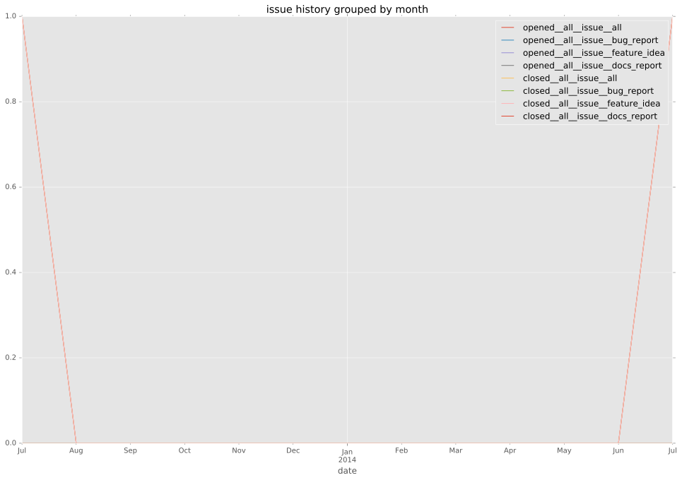
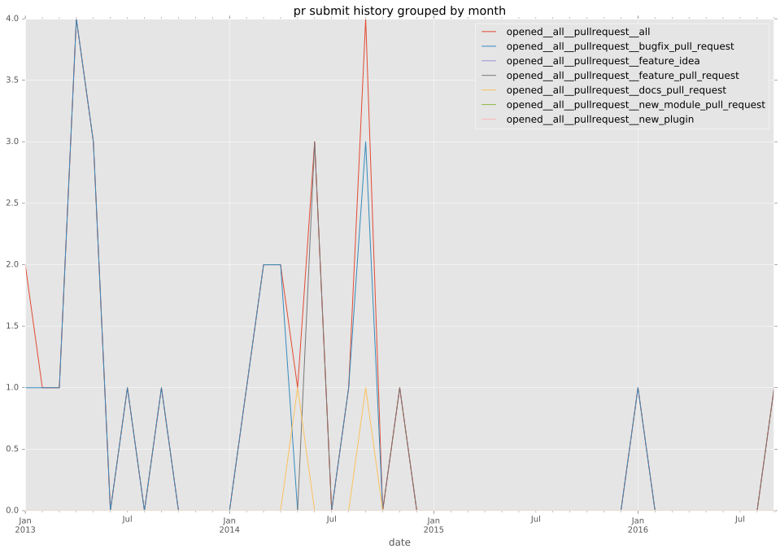
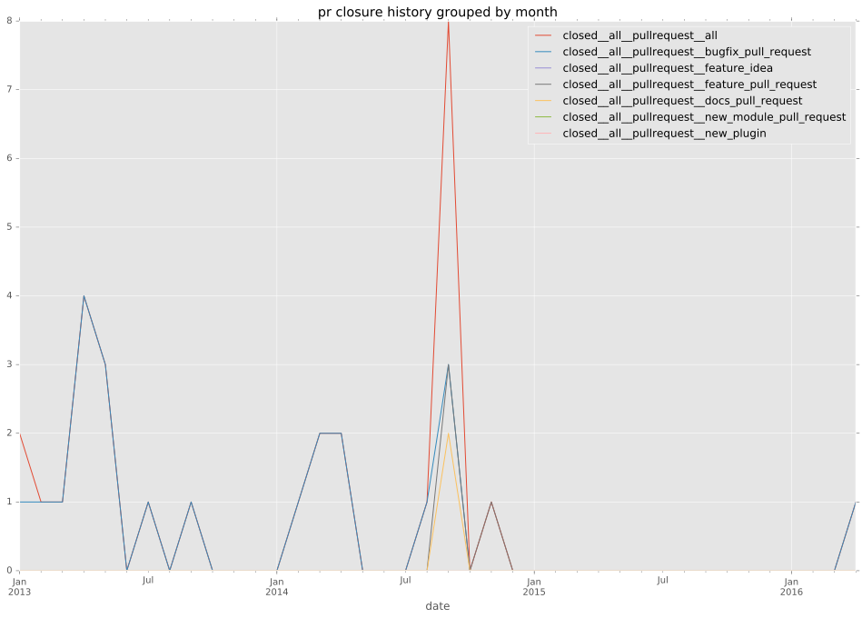

authors
- silviud
maintainers
- silviud
contributors
- npeters : 1 commits
- stevenringo : 1 commits
- mpdehaan : 4 commits
- silviud : 26 commits
- lwade : 4 commits
- jrhe : 1 commits
- blair : 6 commits
- bcoca : 1 commits
- wholroyd : 13 commits
- talonx : 1 commits
- lorin : 6 commits
- jctanner : 2 commits
- willthames : 1 commits
- jimi-c : 6 commits
total issue counts
unknown: 1
feature pull request: 6
pullrequest: 31
docs pull request: 2
bugfix pull request: 22
feature idea: 1
issue: 2
bug report: 1
issue history

pullrequest history


days open by issue type
bugfix pull request
count: 30
std: 20.7937048387
min: 0
max: 83
median: 1.0
mean: 7.03333333333
all
count: 41
std: 37.4789534435
min: 0
max: 145
median: 1.0
mean: 16.3170731707
pullrequest
count: 0
std: nan
min: nan
max: nan
median: nan
mean: nan
docs pull request
count: 3
std: 83.7157890325
min: 0
max: 145
median: 0.0
mean: 48.3333333333
feature pull request
count: 5
std: 56.0918888967
min: 0
max: 115
median: 96.0
mean: 62.4
feature idea
count: 1
std: nan
min: 0
max: 0
median: 0.0
mean: 0.0
issue
count: 0
std: nan
min: nan
max: nan
median: nan
mean: nan
bug report
count: 1
std: nan
min: 0
max: 0
median: 0.0
mean: 0.0
closures grouped by total days open